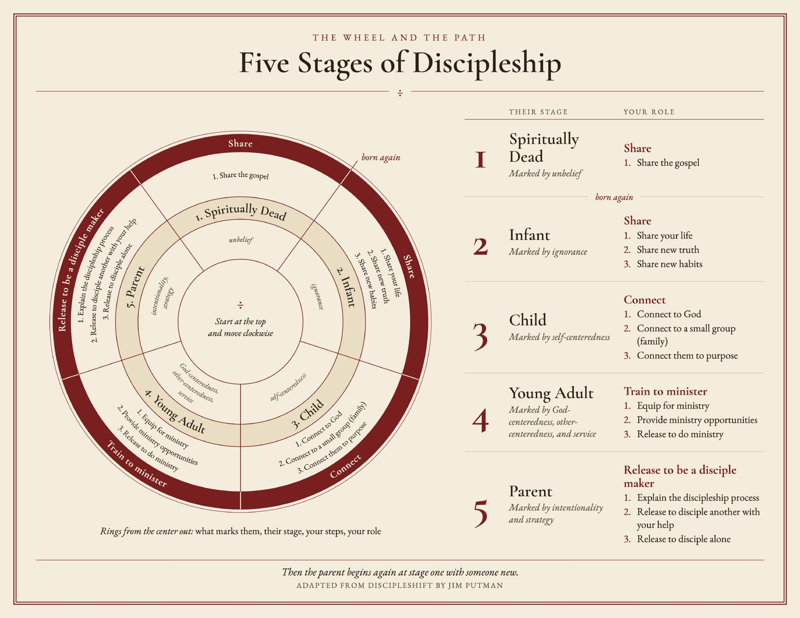

1
Exploring
Marked by questions and searching
- Trust JesusTalk with any pastor, or request a call in the check-in. Have questions? Ask one here or browse resources for seekers.

Wherever you are with Jesus, there is a next step. Find the stage that sounds like you, then take one step at a time.
Five stages, sixteen steps. Take one step at a time, and come back to the check-in whenever you're ready for the next one.
Marked by questions and searching
Marked by wonder and a hunger to learn
Marked by receiving from God and finding your place
Marked by love for God, love for others, and service
Marked by intentionally investing in others
Then begin again with someone new.
Answer a few honest questions about your walk with God. The check-in shows your stage and suggests one next step. It takes about five minutes.
Daily time in the Word and prayer, and a public yes to Jesus in baptism.
Real community in a Life Group, and noticing the people around you who need Jesus and a friend.
Using your gifts to serve, and getting equipped so what you do keeps improving.
Regular gratitude, rest, and celebration, even when circumstances are hard.
Generous giving of your money, your time, and your life so others can follow Jesus.
Every stage has a next step, and every stage needs someone walking alongside. As you grow, your role changes: you share the gospel and your life, connect people to God and a Life Group, train them to minister, and release them to make disciples of their own.
Then the parent begins again at stage one with someone new.


Celebrate your decision to follow Jesus.
RLC Connect
Your next step starts here
Use your gifts to make a difference.
Stages adapted from DiscipleShift by Jim Putman.